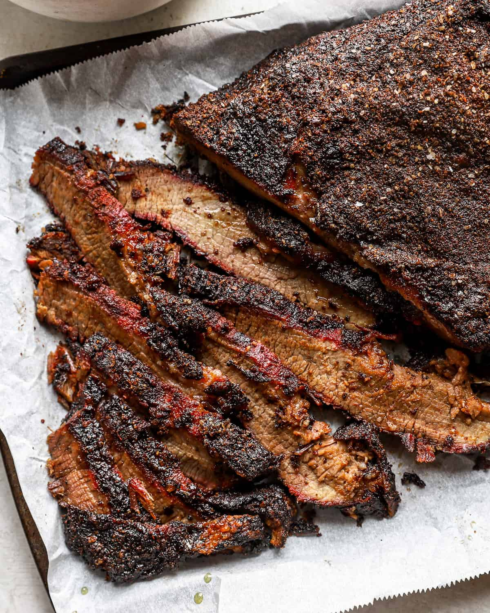

Smoked Brisket

Juicy and tender smoked beef brisket infused with a rich smoky flavor,
seasoned with a blend of spices, and slow-cooked to perfection for
an unforgettable barbecue experience.
Ingredients:
- 5 lbs beef brisket
- 2 tablespoons kosher salt
- 2 tablespoons black pepper
- 1 tablespoon paprika
- 1 tablespoon garlic powder
- 1 tablespoon onion powder
- 1 teaspoon cayenne pepper (optional)
- 1/4 cup brown sugar
- Wood chips (hickory or oak) for smoking
Instructions:
- Preheat your smoker to 225°F (107°C).
- In a small bowl, mix together the kosher salt, black pepper, paprika, garlic powder, onion powder, cayenne pepper, and brown sugar to create the dry rub.
- Trim any excess fat from the brisket, leaving about 1/4 inch of fat for flavor and moisture. Rub the dry rub mixture all over the brisket, ensuring it is evenly coated.
- Place the brisket in the smoker, fat side up. Add wood chips to the smoker box or directly onto the coals for smoke flavor.
- Smoke the brisket for about 1.5 to 2 hours per pound, or until the internal temperature reaches 195°F to 205°F (90°C to 96°C). Maintain a consistent temperature in the smoker throughout the cooking process.
- Once the brisket reaches the desired temperature, remove it from the smoker and wrap it tightly in aluminum foil. Let it rest for at least 30 minutes to allow the juices to redistribute.
- Slice the brisket against the grain and serve with your favorite barbecue sides. Enjoy!
Back to Home